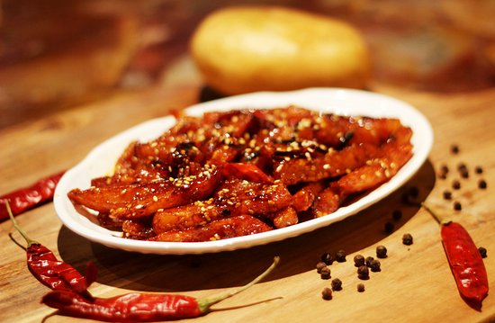
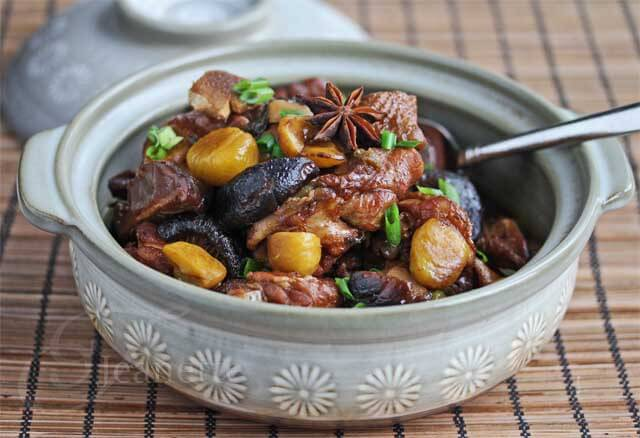
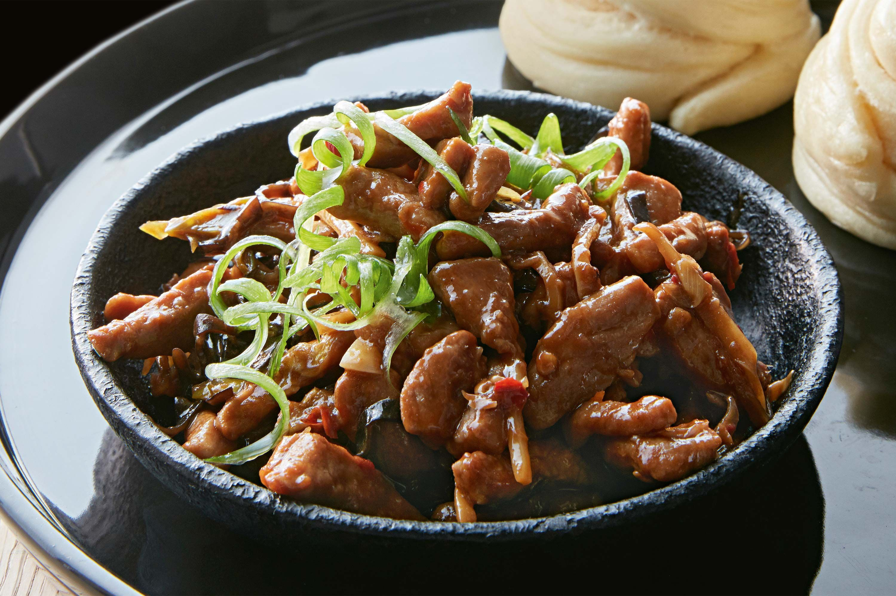

Dim sum is a large range of small Chinese dishes that are traditionally enjoyed in restaurants for
brunch. Most modern dim sum dishes originated in China and are commonly associated with Cantonese
cuisine.
HOT AND SOUR
Hot and sour soup - is a popular example of Sichuan cuisine. Similar versions derive from Hunan
province, near Beijing, and from Beijing cuisine itself, where it may also be known as Hulatang, or
"Pepper Hot Soup".
SECHZWAN CHICKEN
Szechuan chicken, also known as Sichuan chicken, Mala Chicken or Laziji, is a beautifully spiced
stir-fried chicken dish, usually served dry, rather than saucy, and characterised by the use of Szechuan
peppercorns and lots of dried red chillies.
SPRING ROLLS
Spring rolls are rolled appetizers or dim sum commonly found in Chinese and other Southeast Asian
cuisines. The kind of wrapper, fillings, and cooking technique used, as well as the name, They are
filled with vegetables
and other ingredients.

HONEY CHILLI POTATO
Honey Chilli Potato is Indian Chinese-style fried potato fingers glazed with a sweet and spicy sauce. It
is one of those potato snacks that you can keep digging into endlessly without even realizing you’ve
finished an entire dish full of it.
VEGETABLE MANCHOW SOUP
Manchow Soup is another popular soup recipe from Indian chinese cuisine. This hot and spicy veg soup is
perfect to serve as an appetizer or with the main course like hakka noodles or fried rice during cold
winter days.
MUSHROOM MANUCHURIAN
Manchurian Mushroom also popularly known as the Mushroom Chilli is a lip smacking Indian Chinese dish
which can be prepared in just less than 10 minutes. Mushroom are one of the major
sources of Vitamin D making it essential to include in our diets.

CHINESE CHESTNUT CHICKEN
A classic Shanghai dish, braised chestnut chicken is a super comforting dish that is very easy to
prepare and extremely satisfying to eat. It's a great centerpiece for your Sunday dinner, or you can
make a huge batch for meal-prep.
SECHZWAN FRIED RICE
A popular and spicy fried rice version made with a generous amount of schezwan chutney or sauce. it is
basically prepared very similar to the fried rice with the same set of vegetables and long grain rice
but mixed with a spicy sauce for the extra heat and flavour.
WONTON SOUP
A Chinese soup that is prepared with wontons, which are small dumpling-like morsels filled with various
meats, seafood, or vegetables, a clear broth, and several seasonings that may include soy sauce, celery,
pepper, and scallions.

SICHUAN PORK
Szechuan Pork stir fry is a quick, easy, and delicious weeknight dinner. With tender pork loin, crispy
vegetables, and a spicy sauce, it just might be one of your new favorite meals!
PECKING ROASTED DUCK
Peking duck is a dish from Beijing that has been prepared since the Imperial era. The meat is
characterized by its thin, crispy skin, with authentic versions of the dish serving mostly the skin and
little meat, sliced in front of the diners by the cook.